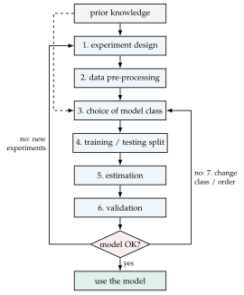
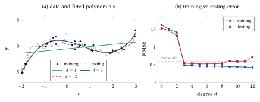

Chapter 5Introduction to system identification
5.1 From static to dynamic estimation problems
Up to now we have learned how to approximately (or even exactly) solve static estimation problems described by
where the rows of \(A\) and \(y\) are built from measured data (e.g. \(y_i\) and \(t_i\) in curve fitting). We now shift towards estimating dynamic models, in which the current output depends on the past history of inputs and outputs. The identification problem we address is
The notions of discrete-time LTI systems needed in the sequel (solution of the state equations, impulse response, \(\Z\)-transform and transfer matrices, stability, reachability, observability, polynomial models) are recalled in Appendices A and B; the reader is encouraged to review them now.
5.2 What can be identified from input–output data
Consider the LTI system
with \(u(k)\in\R^p\), \(y(k)\in\R^q\), \(x(k)\in\R^n\). Its output is (Appendix A)
and its impulse response matrix and transfer matrix are
Invariance under changes of coordinates. If we define a change of coordinates \(\tilde x(k)=T^{-1}x(k)\) with \(T\in\R^{n\times n}\) nonsingular, then
and the new impulse response is
so that \(\tilde w(k)=w(k)\) for all \(k\), and \(W(z)\) is not affected by changes of coordinates in the state space.
Two consequences are fundamental for identification.
The data can at most determine \(\{A,B,C,D\}\) up to a similarity transformation \(T\): every identification method returns one realization in some (arbitrary) basis of the state space. Quantities that are invariant under \(T\) (eigenvalues of \(A\), \(D\), the impulse response, the transfer matrix) can be compared with the true ones; the matrices themselves cannot.
Only the part of the system that is both reachable (from the input) and observable (from the output) influences the input–output behaviour (Appendix A, Kalman decomposition). Therefore we are obtaining the minimal state-space representation: we are capturing the observable and reachable (sub)system. The order \(n\) of the identified model is the order of a minimal realization, i.e. the degree of \(W(z)\) after all zero–pole cancellations.
Model classes. Identification requires the choice of a model class \(\mathcal M\) (a set of candidate models parametrized by a vector \(\theta\) or by matrices):
white-box models are derived from physical laws, with all parameters known; grey-box models have a physically motivated structure with some unknown parameters; black-box models (the focus of this course) only assume a generic LTI structure;
input–output polynomial models (ARX, ARMAX, OE, Box–Jenkins, Chapter 6 and Appendix B) are parametrized by the coefficients of polynomials in the delay operator \(q^{-1}\) and are estimated by prediction-error methods;
state-space models (5.2) are estimated by realization and subspace methods (Chapters 7 and 8).
5.3 The system-identification cycle
Identification is an iterative procedure (Verhaegen and Verdult [1], Chapter 10, “The system-identification cycle”), summarized in Figure 5.1.
Design and conduct experiments. Collect data on the system in the most appropriate conditions, trying to obtain data that are representative of the system behaviour: choice of the sampling time, of the input signal (amplitude, frequency content, persistency of excitation, Section 5.5), of the duration.
Pre-process the data. The dataset may contain trends, offsets, outliers, drifts, clear noise, missing samples, which you want to remove to obtain clean data to work with (e.g. removal of means and linear trends, filtering, resampling).
Choose a model class. You may know something about the system in the black box which makes you believe that a given model class will be appropriate. Otherwise you start with simple models and see how they work.
Build the datasets. Split the whole dataset into training data (only used to learn/estimate the model) and testing data (only used to validate the model, i.e. to understand how the model is able to generalize to unseen data). A heuristic rule is 70–80% training, 30–20% testing (50/50 is also common when data are abundant).
Proceed with estimation. You have data and a model class \(\mathcal M\): choose a technique that estimates models in that class (LS, PEM, subspace methods), and possibly the model order.
Validate the model. After some tests on the training dataset itself, try to understand if the estimated model works fine with testing (unseen) data, so that, according to some measure of error/performance, the error/performance of the model on the testing dataset is similar to the one on the training dataset (this would mean that it has good generalization quality) and is satisfactory for the intended use of the model.
If the model is not good, change model class (or order), or go back to the experiment design and pre-processing steps.

5.4 Measures of error and accuracy
Let \(y_i\) be the observed values in an experiment and \(\hat y_i\) the values that the model would produce (e.g. \(\hat y_i=\hat mt_i+\hat q\) for linear regression, or the simulated or predicted output of a dynamic model), \(i=1,\dots,N\), with \(N\) the cardinality of the dataset. Common measures are:
and many others are possible. Rule of thumb: if the model has comparable errors on the training and testing datasets, \(\mathrm{RMSE}_{\mathrm{train}}\approx\mathrm{RMSE}_{\mathrm{test}}\), it generalizes well.
Simulation versus prediction. For dynamic models two kinds of \(\hat y\) are used. The simulated output \(\hat y_{\mathrm{sim}}(k)\) is computed from the input only (for instance \(\hat y=\hat W(q)u\)); the one-step-ahead predicted output \(\hat y(k|k-1)\) also uses the measured past outputs (Section 6.3). Prediction errors are always smaller and can hide a poor model (for slow systems even \(\hat y(k|k-1)=y(k-1)\) looks good); validation in simulation on fresh data is the more demanding test.
Residual analysis. For a model that also describes the noise, the prediction
errors \(\varepsilon(k)=y(k)-\hat y(k|k-1)\) on validation data should be (i) white, i.e. their sample autocorrelation \(\hat R_\varepsilon(\tau)\) should be negligible for
\(\tau\neq0\), and (ii) uncorrelated with past inputs, \(\hat R_{\varepsilon u}(\tau)\approx0\).
Under the whiteness hypothesis, about \(95\%\) of the normalized sample correlations lie in
\(\pm1.96/\sqrt N\) (MATLAB: resid).
Data are generated as \(y_i=0.5t_i^3-t_i^2-t_i+1+\varepsilon_i\), \(\varepsilon_i\sim\mathcal N(0,0.6^2)\), with \(30\) training and \(30\) testing points drawn uniformly in \([-2,3]\). Polynomials of degree \(d=0,\dots,12\) are fitted by least squares on the training data. Figure 5.2 shows that the training RMSE always decreases with \(d\) (the model classes are nested), while the testing RMSE drops sharply at \(d=3\) and then stays flat or grows: the degree-12 polynomial chases the noise (overfitting) and oscillates between the samples. The testing RMSE is minimal at \(d=5\) (\(0.521\)) but practically identical at \(d=3\) (\(0.540\)): by the principle of parsimony the simplest model with comparable performance is preferred, i.e. \(d=3\), which is also the order selected by the AIC and MDL criteria of Section 6.6. The estimated cubic, \(0.507t^3-1.023t^2-0.970t+0.947\), is close to the true one. The RMSE \(\approx0.5\) reached for \(d\ge3\) is of the order of the noise standard deviation: no model can do better on unseen data.

5.5 Persistency of excitation
Not every input is suitable for identification: a constant input, for instance, cannot reveal the dynamic behaviour of a system at all frequencies. The property that an input must have is captured by the following notion, which involves a block Hankel matrix of input samples.
Definition 5.1 (Persistency of excitation). A signal \(u(k)\in\R^p\), \(k=0,1,\dots\), is persistently exciting of order \(\ell\) if and only if there exists some \(N\) (\(\ge p\ell\)) such that the block Hankel matrix
is full (row) rank, that is, \(\rank(U_{0,\ell,N})=p\ell\).
The notation \(U_{i,\ell,N}\) (first index \(i\): time of the top-left sample; \(\ell\): number of block rows; \(N\): number of columns) will be used throughout Chapters 7 and 8; \(Y_{i,\ell,N}\) denotes the analogous matrix built with the outputs. For stationary stochastic signals an equivalent asymptotic definition requires \(\lim_{N\to\infty}\frac1NU_{0,\ell,N}U_{0,\ell,N}\T\succ0\) [1].
A step \(u(k)=1\) gives a Hankel matrix with all entries equal to one: rank one, so it is PE of order 1 only.
A sinusoid \(u(k)=\sin(\omega k)\), \(0<\omega<\pi\), satisfies \(u(k+2)=2\cos\omega\,u(k+1)-u(k)\): every row of the Hankel matrix beyond the second is a combination of the first two, so it is PE of order 2 (and not 3). A sum of \(s\) sinusoids with distinct frequencies in \((0,\pi)\) is PE of order \(2s\).
A realization of white noise (or a pseudo-random binary sequence of suitable period) is PE of any order \(\ell\) for \(N\) large enough: this is why these signals are the standard choice for identification experiments.
Intuitively, a signal PE of order \(\ell\) “contains at least \(\ell\) frequencies”, and can be used to identify models with up to about \(\ell\) parameters in the input–output relation.
Stacking inputs and outputs,
one obtains a matrix whose columns are trajectories of length \(\ell\) of the system. The following result, known as Willems’ fundamental lemma (J. C. Willems; other key names in this line of research are I. Markovsky and B. De Moor), is nowadays very used in the literature on data-driven control (see e.g. De Persis and Tesi, “Formulas for data-driven control: stabilization, optimality and robustness”, IEEE TAC 2020 [14], and [13, 15]).
Theorem 5.2 (Willems’ fundamental lemma, state-space version). Let the system (5.2) (noise free) be reachable, let \(u\) be persistently exciting of order \(\ell+n\), and let \(X_{0,N}=[x(0)\;x(1)\;\cdots\;x(N-1)]\) be the corresponding state sequence. Then
If moreover the system is observable and \(\ell\ge n\), also \(\rank\bmat{U_{0,\ell,N}\\ Y_{0,\ell,N}}=p\ell+n\), and every input–output trajectory of length \(\ell\) of the system is a linear combination of the columns of this matrix.
In other words, a single, sufficiently rich experiment contains all the information about the system, in the form of the column space of a data Hankel matrix. The same kind of rank condition is the enabling assumption of the MOESP algorithm (Lemma 8.1).
5.6 Exercises
Exercise 5.1. Compute the rank of the Hankel matrix \(U_{0,\ell,N}\) for \(\ell=1,\dots,5\) and \(N=100\) when \(u(k)=\sin(0.3k)+\sin(1.2k)\), and when \(u\) is a realization of white noise. Relate the results to the PE order.
Exercise 5.2. Show that if \(u\) is PE of order \(\ell\), it is PE of every order \(\ell'<\ell\).
Exercise 5.3. Repeat Example 5.1 \(100\) times with different noise realizations and plot the histogram of the orders selected by (a) minimum testing RMSE, (b) AIC, (c) MDL. Which criterion is more reliable? What happens with \(N=300\)?
Exercise 5.4. Prove that for a discrete-time LTI model the one-step-ahead prediction error on noise-free data is zero, while the simulation error is not zero if \(x(0)\) is unknown. What does this imply for the choice of the validation criterion?
5.7 Implementation in MATLAB and Python
The validation measures and a numerical check of persistency of excitation take a few lines of core MATLAB:
rmse = @(y, yh) sqrt(mean((y - yh).^2));
nrmse = @(y, yh) rmse(y, yh) / (max(y) - min(y));
fitpct = @(y, yh) 100*(1 - norm(y - yh)/norm(y - mean(y)));
% persistency of excitation of order l: rank of the block Hankel matrix
u = sin(0.3*(0:199)'); l = 3; N = numel(u) - l + 1;
H = hankel(u(1:l), u(l:end)); % l x N Hankel matrix (scalar input)
fprintf('rank = %d (PE of order %d requires %d)\n', rank(H), l, l);
% random training/testing split (70/30) of a static dataset
m = 100; idx = randperm(m); itr = idx(1:70); ite = idx(71:end);
With the System Identification Toolbox (not available in GNU Octave), data are handled
through iddata objects and the cycle of Figure 5.1 reads:
data = iddata(y, u, Ts); % output, input, sampling time
data = detrend(data); % remove means / linear trends
ze = data(1:700); zv = data(701:end); % training (estimation) / testing (validation)
m = arx(ze, [2 2 1]); % estimation (see the PEM chapter)
compare(zv, m); % simulation fit on validation data
resid(zv, m); % whiteness and independence tests
In Python the same metrics are in code/python/sysid.py (rmse,
nrmse_range, fit_percent); Figure 5.2 is produced by the
function poly_order_selection of experiments.py:
import numpy as np
f = lambda t: 0.5*t**3 - t**2 - t + 1
rng = np.random.default_rng(7)
ttr = rng.uniform(-2, 3, 30); ytr = f(ttr) + 0.6*rng.standard_normal(30)
tte = rng.uniform(-2, 3, 30); yte = f(tte) + 0.6*rng.standard_normal(30)
for d in range(13):
th, *_ = np.linalg.lstsq(np.vander(ttr, d + 1), ytr, rcond=None)
V = np.mean((ytr - np.vander(ttr, d + 1) @ th)**2)
e_te = np.sqrt(np.mean((yte - np.vander(tte, d + 1) @ th)**2))
aic, mdl = np.log(V) + 2*(d + 1)/30, np.log(V) + (d + 1)*np.log(30)/30
print(d, np.sqrt(V), e_te, aic, mdl)
Further Study: cross-validation and informative experiments
\(K\)-fold cross-validation. When data are scarce, a single training/testing split wastes information and gives a noisy estimate of the generalization error. In \(K\)-fold cross-validation the data are divided into \(K\) blocks; each block is used once for testing while the model is trained on the other \(K-1\), and the \(K\) testing errors are averaged [17]. For dynamic systems the blocks must be contiguous in time (and the initial conditions of each block handled properly), otherwise the correlation between neighbouring samples makes the testing data not really “unseen”.
Informative experiments. A dataset is informative with respect to a model class if it allows one to distinguish between any two models of the class that have different input–output behaviour [5]. For open-loop experiments with quasi-stationary signals, informativity is guaranteed by persistency of excitation of sufficient order; in closed loop (the input is generated by a feedback controller) informativity may be lost even with rich reference signals, which is the root of the difficulties of closed-loop identification.
Willems’ lemma in its behavioural form states that, for a controllable system with lag \(\ell_0\) and an input PE of order \(\ell+n\), the image of the data Hankel matrix equals the set of all length-\(\ell\) trajectories. It underlies data-driven predictive control (DeePC) and the direct design of controllers from data [14, 15].